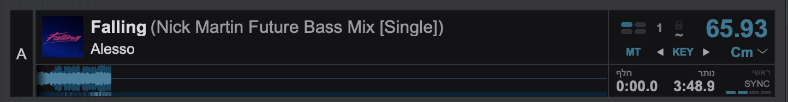
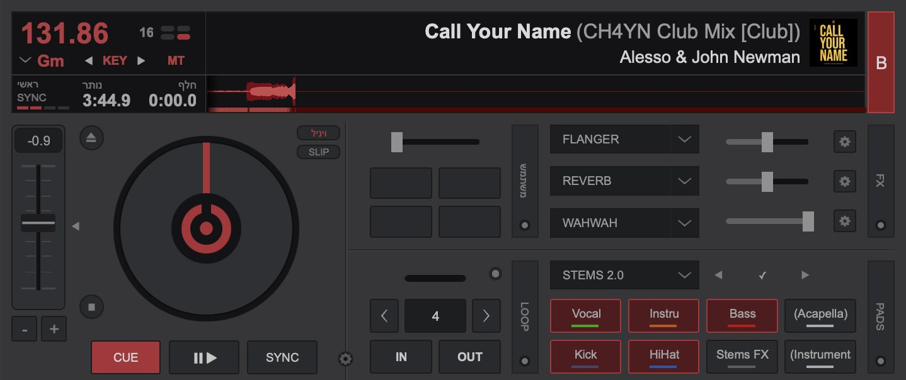

הדגמה אינטראקטיבית
SYNC: שני הדקים שלך, קצב אחד


במסך שלך: דק A מראה 65.93 ודק B מראה 131.86 BPM, בדיוק כפול. SYNC מתאים את הקצב (כאן ל-131.86, כפול של 65.93) ומיישר את הביטים. הנקודות מהבהבות בקצב.
כדי ששני שירים יישמעו טוב יחד, הם צריכים לרוץ באותו BPM והביטים שלהם צריכים ליפול באותו רגע. כפתור Sync עושה את שני הדברים: הוא מתאים את ה-BPM של הדק לדק השני, ומיישר את הביטים לפי הגריד.
איך משתמשים
- דק A מתנגן לקהל.
- טען שיר לדק B, שים Cue על הביט הראשון.
- לחץ Play ב-B ומיד Sync ב-B (הדק שמצטרף הוא זה שמסונכרן).
- עכשיו שני השירים רצים יחד בקצב.
מקלדת (מדריך רשמי): Alt+Q ל-Sync בדק שמאל, Alt+U בדק ימין.
מגבלות
- Sync נשען על הגריד. אם ה-BPM זוהה שגוי, הסנכרון ייכשל.
- הפרש BPM גדול (למשל 90 מול 128) ישנה מאוד את מהירות השיר וזה יישמע לא טבעי.
- ב-VirtualDJ יש בדרך כלל Key Lock (Master Tempo) כדי שהשירה לא תהפוך ל"צ'יפמאנק" כשמשנים מהירות. בדוק שהוא דולק.
💡 אין בושה להשתמש ב-Sync. גם מקצוענים משתמשים בו, ומתרכזים בבחירת שירים ובמעברים.